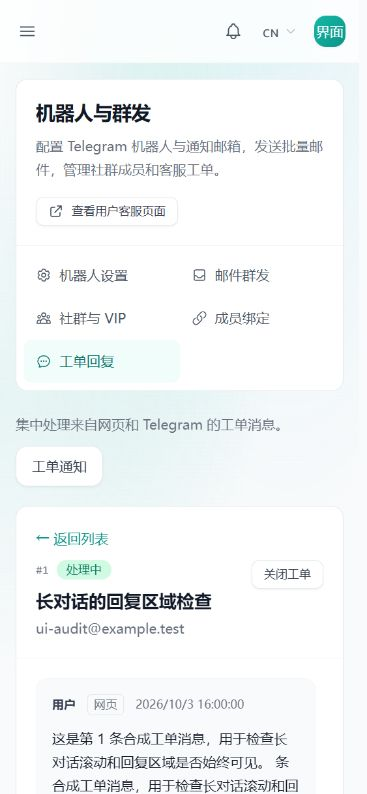
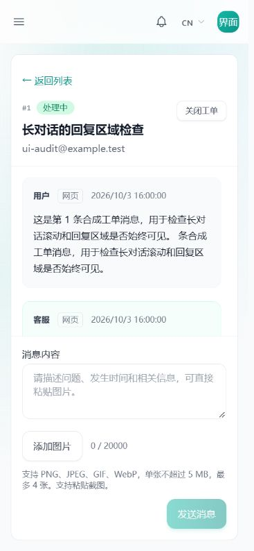
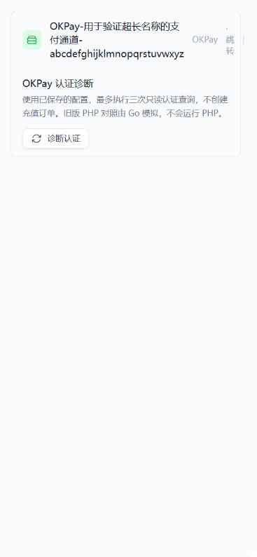
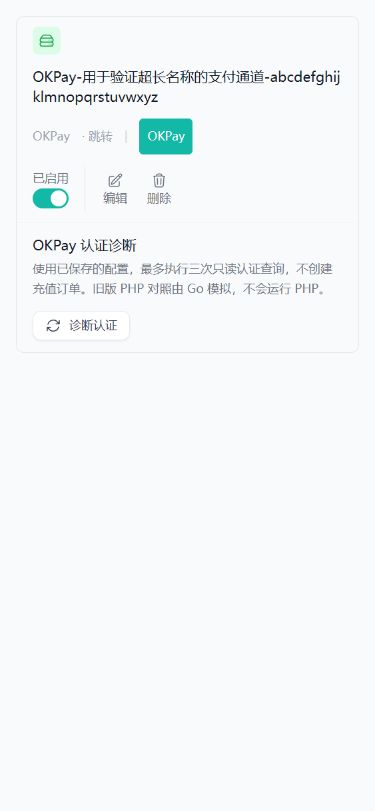
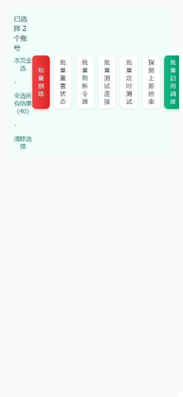
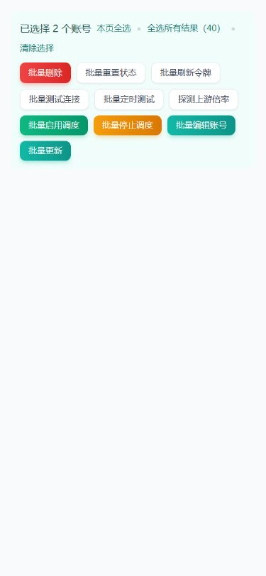
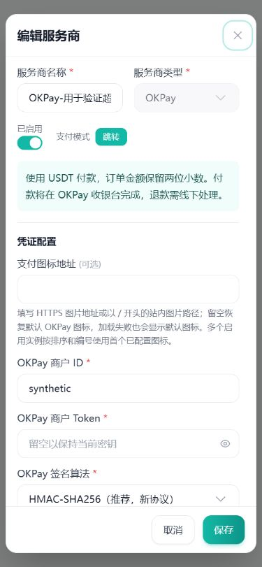
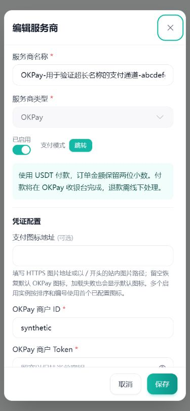
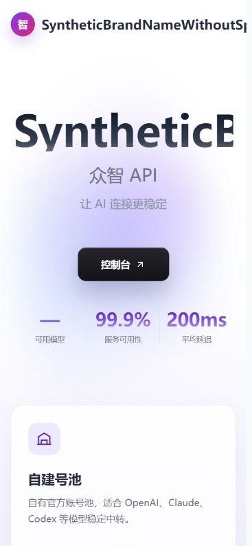
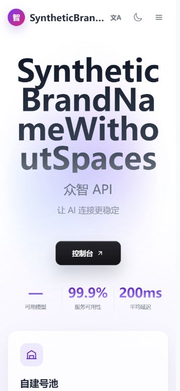

界面缺陷修正：前后对照
2026 年 10 月 3 日 · 基于 v0.2.13.2 · 局部修正，保持现有页面结构和主题
截图使用本地真实 Vue 组件与合成数据。修改前来自修改前代码快照，修改后来自当前工作区。点击截图可查看原图；完整覆盖范围和测试边界见审查报告。
工单回复区
50 条合成消息，375×812 视口。修改前回复区落到屏幕外；修改后历史独立滚动，回复和发送留在面板内。


支付服务商卡片
375px 视口。修改前页面被撑到 551px；修改后长名称和操作分组换行，恢复到 375px。


账户批量操作
375px 视口。修改前工具栏撑到 505px；修改后操作换行，恢复到 375px。


支付配置表单
375px 视口。修改前手机双列字段和回调路径挤压输入；修改后手机单列，并让路径独占下一行。


首页长站点名称
使用无空格的合成英文站名。修改前标题被裁切、导航被推出视口；修改后标题折行、顶部品牌省略显示，菜单保持可用。


群消息长名称
同一条合成 TG 消息。修改前姓名被截在容器边界；修改后允许长名称断行，增加焦点反馈。
邮件模板长主题
375px 视口。修改前长主题将内容撑到 1841px；修改后布局列可收缩、主题换行。此组为完整页面截图，可打开原图放大查看。